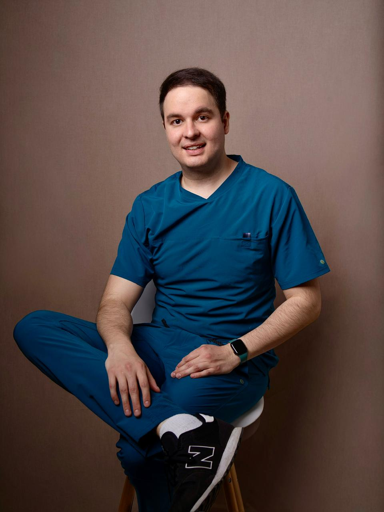

Prioritario
Prioritario
Check Up Ginecológico
Evaluación integral preventiva con exploración, Papanicolaou, ultrasonido ginecológico y orientación personalizada.
Conocer más →Dr. Omar Alberto Tirado Aguilar. Atención especializada en embarazo de alto riesgo, ultrasonido obstétrico y salud ginecológica integral. Medicina basada en evidencia con acompañamiento cercano y humano.
Formación en el Instituto Nacional de Perinatología, enfoque en medicina basada en evidencia y un trato cercano y humano para acompañarte en cada etapa de tu salud femenina y tu embarazo.
Subespecialidad en Medicina Materno Fetal por el Instituto Nacional de Perinatología, avalado por la UNAM. Preparación en el centro de referencia más importante del país.
Experiencia en ultrasonido fetal, Doppler, tamizaje de preeclampsia, cardiología fetal, cervicometría y evaluación de primer trimestre con los más altos estándares internacionales.
Cada consulta está centrada en escuchar, orientar y acompañarte con decisiones compartidas, información clara y un enfoque profundamente humano para ti y tu bebé.
Autor de publicaciones científicas y del Manual de Anticonceptivos (Wolters Kluwer, 2025). Miembro de ACOG, ISUOG, SMFM y FEMECOG con actualización académica constante.

El Dr. Omar Alberto Tirado Aguilar es Médico Cirujano por la Universidad Autónoma de San Luis Potosí, Especialista en Ginecología y Obstetricia y Subespecialista en Medicina Materno Fetal por el Instituto Nacional de Perinatología "Isidro Espinosa de los Reyes", avalado por la UNAM.
Su práctica se enfoca en brindar atención especializada, cercana y basada en evidencia a mujeres que requieren seguimiento ginecológico, control prenatal de alto riesgo o valoración fetal avanzada. Cuenta con formación específica en ultrasonido fetal, Doppler, tamizaje de preeclampsia, cardiología fetal, cervicometría y evaluación de primer trimestre.

Atención ginecológica integral para cada etapa de tu vida. Como Ginecólogo-Obstetra en Ciudad de México, el Dr. Omar Tirado brinda consultas de evaluación, prevención y seguimiento para mujeres que desean cuidar su salud femenina con un enfoque personalizado y basado en evidencia.
Esta categoría abarca desde la consulta ginecológica integral hasta el Check up preventivo y la asesoría anticonceptiva individualizada. El objetivo es escuchar, orientar y proponer un plan diagnóstico y terapéutico claro, respetando tus preferencias, tu proyecto de vida y tu bienestar.
Como Centro de Asistencia para Embarazadas en Ciudad de México, el consultorio del Dr. Omar Tirado ofrece atención especializada desde el inicio del embarazo hasta el nacimiento, con enfoque particular en embarazos que requieren vigilancia más estrecha por factores maternos, fetales o placentarios.
Un buen control prenatal permite detectar oportunamente factores de riesgo, vigilar el crecimiento y bienestar de tu bebé, y favorecer una experiencia de embarazo más tranquila, informada y segura. En casos de embarazo de alto riesgo o gemelar, se integran protocolos de vigilancia especializados.

El Centro de Maternidad del Dr. Omar Tirado en Ciudad de México ofrece ultrasonido obstétrico especializado y diagnóstico prenatal avanzado a lo largo de todo el embarazo. Estudios precisos, interpretación experta y acompañamiento humano en cada trimestre.
Desde el ultrasonido genético del primer trimestre entre las 11 y 14 semanas, hasta el estructural detallado del segundo trimestre y la vigilancia con Doppler en el tercero, cada estudio se realiza con la meticulosidad y rigor académico propios de la subespecialidad en Medicina Materno Fetal.
Servicios integrales de ginecología, obstetricia y Medicina Materno Fetal diseñados para acompañarte con precisión clínica y calidez humana.
Prioritario
Evaluación integral preventiva con exploración, Papanicolaou, ultrasonido ginecológico y orientación personalizada.
Conocer más →
Atención para alteraciones menstruales, dolor pélvico, infecciones, quistes, miomas y síntomas hormonales.
Conocer más →
Elección personalizada del método anticonceptivo ideal según tu edad, antecedentes y planes reproductivos.
Conocer más →
Acompañamiento cercano desde las primeras semanas con valoración materna, fetal y vigilancia del crecimiento.
Conocer más → Destacado
Destacado
Vigilancia especializada para hipertensión, diabetes, enfermedades autoinmunes y antecedentes obstétricos.
Conocer más →
Seguimiento especializado de gestaciones múltiples con vigilancia de complicaciones propias de este tipo de embarazo.
Conocer más →
Estudio genético y estructural temprano entre las 11 y 14 semanas con tamizaje de aneuploidías.
Conocer más → Destacado
Destacado
Evaluación anatómica detallada del bebé entre las 18 y 24 semanas para detectar alteraciones estructurales.
Conocer más →
Seguimiento del crecimiento, líquido amniótico, placenta y Doppler materno-fetal en la etapa final del embarazo.
Conocer más →Atención en los principales hospitales privados de Ciudad de México para que puedas elegir la sede más cercana o conveniente para ti.
Torre de Consultorios · Consultorio 201 General Juan Cano 107, San Miguel Chapultepec I Sección, Miguel Hidalgo, CDMX 11850
Torre Ángeles · Consultorio 645 Camino Sta. Teresa 1055, Magdalena Contreras, CDMX 10700
Torre de Consultorios II · Consultorio 187 Riobamba 639, Lindavista Sur, Gustavo A. Madero, CDMX 07760
Piso 6 · Consultorios Prolongación Paseo de la Reforma 19, Paseo de las Lomas, Santa Fe, Álvaro Obregón, CDMX 01330
Pacientes de todas las alcaldías y principales colonias de CDMX acuden a nuestros consultorios para recibir atención especializada en ginecología y Medicina Materno Fetal.
Las preguntas más comunes sobre ginecología, embarazo y Medicina Materno Fetal. Si tienes alguna duda adicional, escríbenos por WhatsApp.
Cuando tu embarazo presenta factores de riesgo como hipertensión, diabetes, embarazo múltiple, antecedente de complicaciones obstétricas, hallazgos anormales en ultrasonido o necesidad de una segunda opinión en diagnóstico prenatal. La subespecialidad en Medicina Materno Fetal aporta la experiencia necesaria para estos escenarios.
Es aquel que presenta condiciones maternas, fetales o placentarias que incrementan la probabilidad de complicaciones y requieren vigilancia más estrecha. Incluye casos como hipertensión, diabetes, enfermedades autoinmunes, embarazo múltiple, restricción del crecimiento o antecedente de complicaciones obstétricas.
Incluye la evaluación detallada de cabeza, cerebro, cara, columna, corazón, abdomen, extremidades, placenta y líquido amniótico del bebé, generalmente entre las 18 y 24 semanas. Es uno de los estudios más importantes del embarazo para detectar oportunamente alteraciones estructurales.
El ginecólogo-obstetra atiende la salud femenina integral y los embarazos de bajo riesgo. El subespecialista en Medicina Materno Fetal cuenta con formación adicional específica en embarazo de alto riesgo, ultrasonografía obstétrica avanzada, diagnóstico prenatal y manejo de complicaciones maternas y fetales complejas.
El Doppler obstétrico se recomienda especialmente en embarazos con factores de riesgo como hipertensión, diabetes, sospecha de restricción del crecimiento fetal, antecedentes obstétricos importantes o cuando se requiere vigilancia del bienestar fetal en el tercer trimestre.
Incluye consulta ginecológica completa, historia clínica, exploración ginecológica, Papanicolaou y pruebas complementarias según indicación, ultrasonido ginecológico cuando es necesario, orientación sobre salud sexual y reproductiva, y detección de alteraciones menstruales, quistes, miomatosis y otras condiciones frecuentes.
Por supuesto. Ofrecemos revaloración especializada de estudios previos con integración diagnóstica y orientación sobre pronóstico, seguimiento y plan perinatal. Puedes enviar tus estudios previamente para una mejor preparación de la consulta.
Atención especializada en ginecología y Medicina Materno Fetal en Ciudad de México. Citas y urgencias 24 horas. Envíanos un mensaje y con gusto te orientamos.